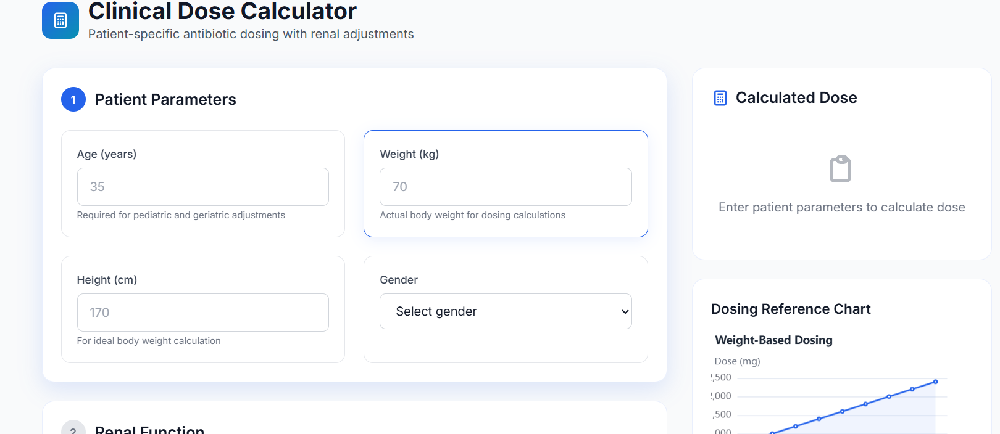
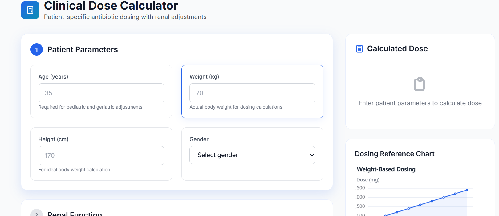
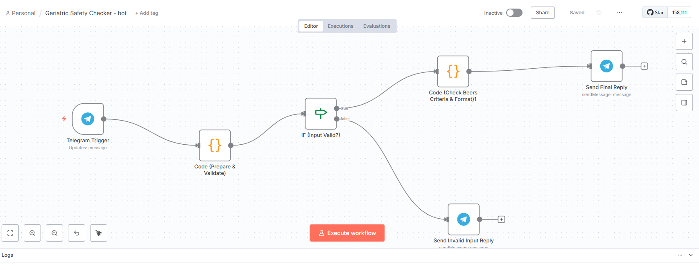
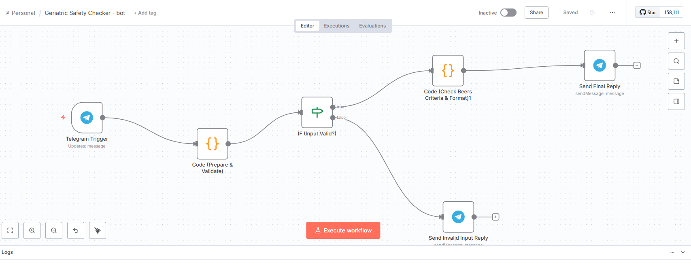

Featured Project — AntibioticGuideline Pro
Full clinical decision support platform: guideline engine, patient-specific dose calculator, drug–drug interaction checker, AI assistant and admin guideline editor.
A single product that helps clinicians choose antibiotics, check interactions, and calculate renal-adjusted doses. Built with HTML, Tailwind CSS and vanilla JavaScript using a JSON-driven guideline database.
My role
Solo developer: UI/UX, data model, guideline integration, interaction logic, and deployment.
Impact / Outcome
- Demonstrates product-level clinical logic for antibiotic selection
- Shows API integration and structured guideline authoring
- Ready to be adopted or extended for clinical use
Tech stack
- HTML · Tailwind CSS · JavaScript
- Anime.js · ECharts · Typed.js
- JSON-based guideline engine
Problem
Clinicians need fast, evidence-based recommendations for antibiotic selection and dosing while accounting for renal function and drug interactions. Existing resources are scattered and not always clinician-friendly at point-of-care.
Solution
I built AntibioticGuideline Pro — a JSON-driven platform that centralises guideline regimens, offers patient-specific dosing calculators, checks drug interactions (via API), and provides an admin UI to edit guidelines safely.
Detailed architecture & data model
The platform is built as a modular frontend application backed by a JSON guideline store. Key components include:
- Guideline Store (guidelines.json): Structured entries for conditions, first/second-line antibiotics, dosing ranges, paediatric rules, and renal adjustment rules.
- Search & Syndrome Matcher (main.js): Keyword-based matching with priority scoring to suggest likely conditions and relevant guideline nodes.
- Dose Calculator (calculator.html): Patient input form (weight, age, CrCl) with stepwise dosing algorithm and renal-modifier functions.
- Interaction Engine (drugInteractionClient.js): Client module queries an interaction API, normalises results, and generates a severity matrix with suggested alternatives.
- Admin Editor (admin.html): Simple JSON editor with validation and import/export to safely update guideline content.
User flow
- Clinician searches for a syndrome or enters patient data
- System suggests guideline options with first/second-line choices
- Clinician opens dose calculator and adjusts for weight/renal function
- Before finalising, the interaction checker scans for potential drug–drug risks
- Admin users can edit guidelines and publish changes without code deployments
Security & deployment notes
The current prototype is frontend-only for demonstration. For production deployment I recommend server-side validation, secure API keys for the interaction service, and role-based access control for the admin editor.
What I learned
How to structure clinical knowledge in JSON, design UI for clinicians, integrate third-party APIs, and deliver a deployable frontend product suitable for demonstrations to potential employers.
Screenshots
(If images do not load, replace the paths below with the exact filenames you uploaded.)

 


 

All Project Modules
- Dashboard: Main clinical overview and guideline access.
- Dose Calculator: Weight-based and renal-adjusted antibiotic dosing.
- Interaction Checker: Multi-drug interaction matrix with severity levels.
- AI Assistant: Chat-style assistant for clinical questions.
- Admin Panel: Guideline JSON editor and content management.
Project — Vitamin D3 Clinical Trial
A quasi-experimental clinical study titled “Can Vitamin D3 Correction Improve Autism Severity?” conducted in children with Autism Spectrum Disorder and Vitamin D deficiency.
- Study Type: Quasi-experimental interventional study
- Participants: Children with ASD + Vitamin D deficiency
- Outcomes: CARS, ATEC, SRS, Sleep‑Questionnaire, Behavioral Scales
- Role: Study design, ethics documentation, data collection, scale scoring & statistical planning
Project — n8n Automation Workflows
A collection of automated clinical and research workflows built using n8n to reduce manual workload, improve accuracy, and boost efficiency in pharmacy practice, clinical research, and digital health operations.
- Medication Error Reporting Bot: Automated form → Google Sheet → Email alert workflow.
- Drug‑Interaction Auto Checker: Workflow that takes drug input and sends interaction results via Telegram.
- Clinical Trial Reminder System: Automatically schedules follow‑ups, sends reminders, and logs responses.
- Research Data Collector: Scrapes PubMed keywords and stores structured data into Google Sheets.
- Hospital Rounds Automation: Daily automated message delivery with required patient data fields.
- Geriatric Safety Checker Telegram Bot: A fully automated Telegram bot built in n8n that validates drug inputs, checks them against the Beers Criteria, and sends formatted safety alerts. The workflow includes:
- Trigger Node: Receives medication names from Telegram.
- Validation Node: Ensures the drug input is not empty and matches supported entries.
- Beers Criteria Lookup: Matches the drug against JSON‑based risk rules.
- Risk Classification: Flags anticholinergic risk, fall risk, CNS risk, renal warning, and drug–disease interactions.
- Formatter Node: Builds a clean clinical‑style safety message.
- Telegram Send Node: Automatically sends the final safety alert back to the user.